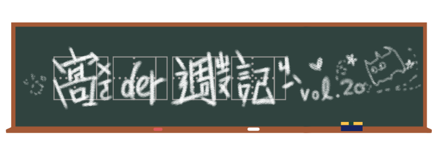

上半年的迷因大概都要圍繞著肺炎轉ㄌ，這星期的兩個迷因也還是三句不離肺炎疫情，
但都讓人覺得暖暖ㄉㄋ（喔不其實是要夏天ㄌ）
愛心抱抱表符
想必大家應該都已經能按加油抱抱表符了吧？沒錯，FB又新增了新的表情符號！繼以往的「溫馨」紫色小花、「驕傲」彩虹還有其實是意外出包的「飛機(?)」，現在又有新選擇了！
起源
原本還以為是大心的更新版（或是臉書又要變醜ㄌ），沒想到是因應疫情的小巧思。4月17日時，FB的通訊經理即在Twitter宣布將推出新的表情符號，讓大家能更直接的對彼此傳達支持和鼓勵。
隨著國外陸續開放測試，不少人也看得心癢癢。終於從5月1日開始，台灣也能使用這個新功能了。「即使分散各地，大家心在一起」，不管對方發什麼總之這個加強版的大心先按下去！
散佈
這新表情除了可愛也算是欠玩，有不少人拿愛心來開刀，換成各式各樣的東西，讓大家盡情擁抱所愛，例如貓貓、珍奶、各式美食。不過，也有人認為「怒」才是最正宗王道的表情符號，可不能輕易變心。
React Mash up？
喜歡「怒」的網友們為此小小較勁了一番，有人乾脆一點，把怒跟加油直接混在一起，完美的表情符號就這麼誕生了！讓人因此想到，有沒有機會看到Twitter的名帳號emoji混合BOT這是由@louanben開設的BOT帳號，旨在混合二至三種既有的emoji創造出新的變化，例如帳號頭貼的哭哭派對emoji已受到廣泛愛用。點我前往關注→
不過，考慮到React（臉書貼文表情）和Emoji（表情符號）屬於不同體系，要共演恐怕還是有難度。做出加油表情的混合版呢？